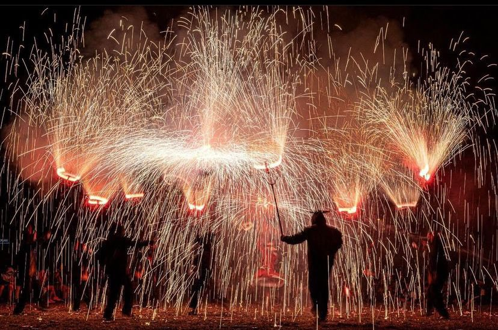
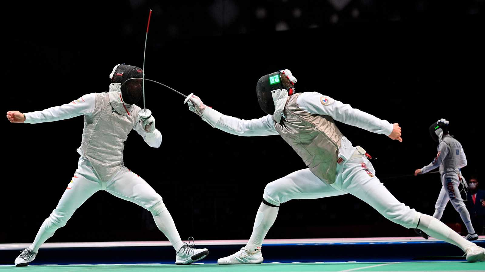
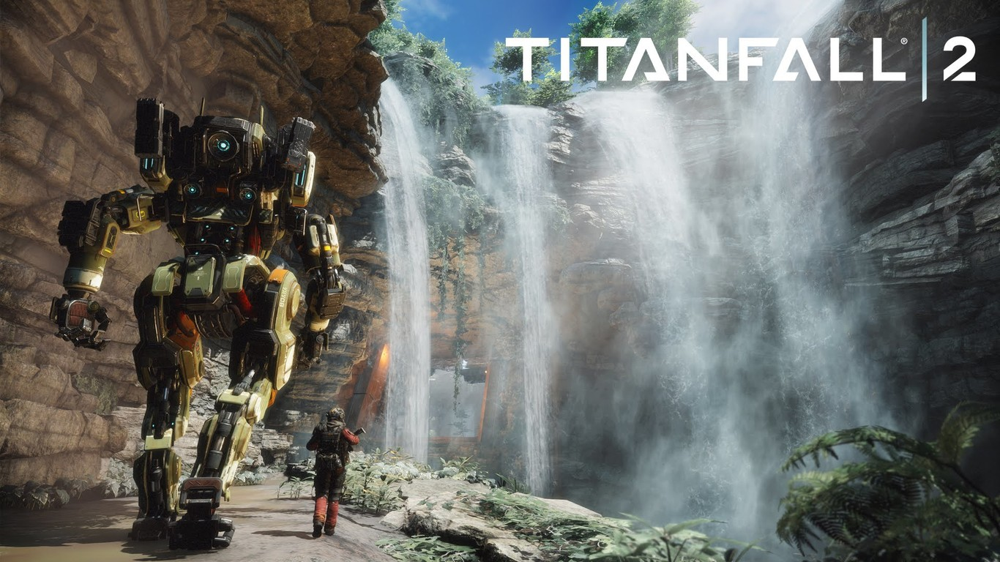
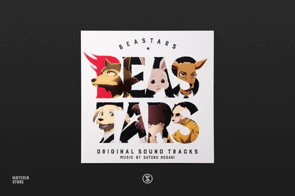

MIS HOBBIS
Diables
Diables es un grupo local de fuegos artificiales de mi ciudad, llevo 10 años en ella i aunque parezca peligroso es una de las actividades más divertidas que tengo el placer de hacer
Esgrima
La esgrima es mi deporte favorito llevo practicándolo al rededor de 4 años
Videjuegos
me encantan los videjuegos, es mi pasion i es por ellos el por que quiero dedicarme a crear estas experiencias a la gente. Mi juego faborito es titanfall 2 sindo el mefos FPS que he provado en mi vida
Anime y otras cosas
El manga y el anime es un medio que tiene cantidad de historia interesantes, Beastars siendo mi historia favorita que jamás he tenido el placer de leer.